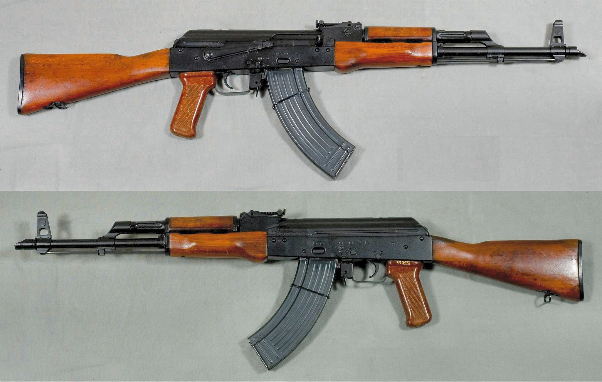
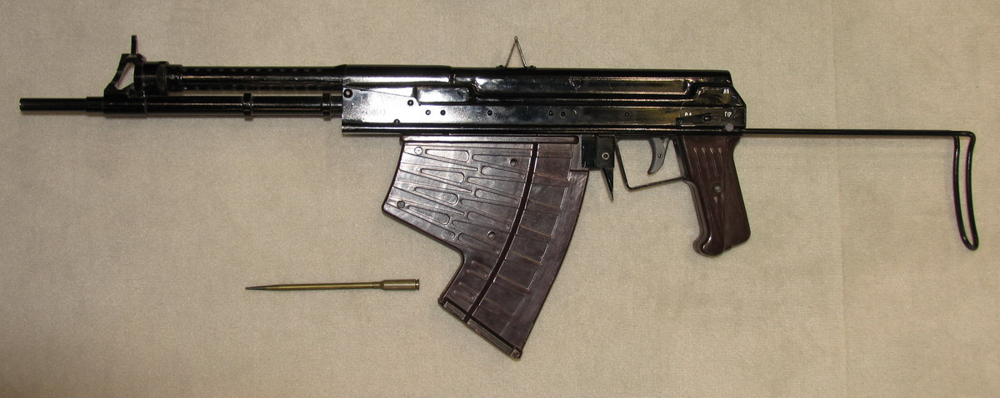
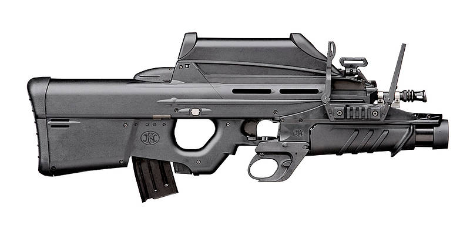
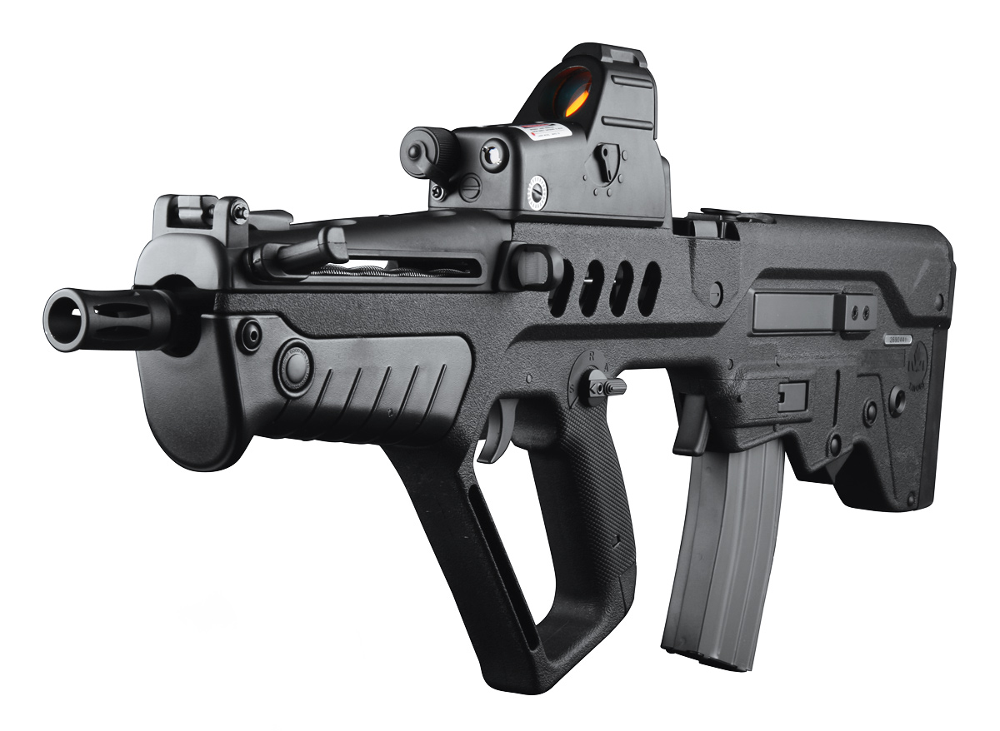
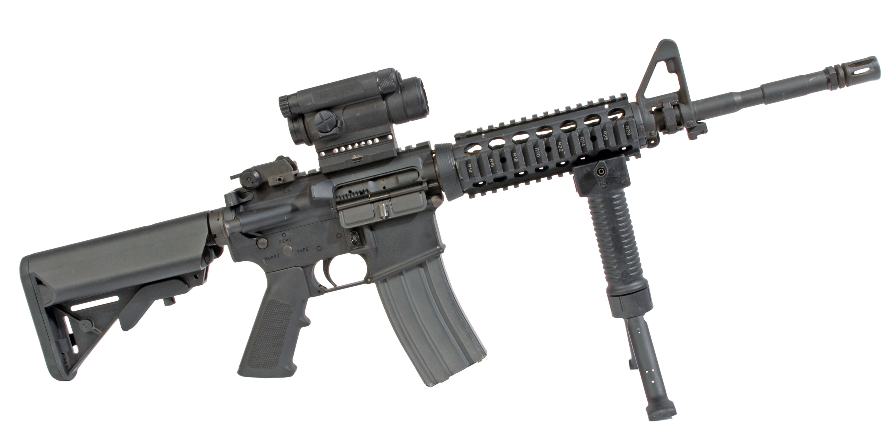
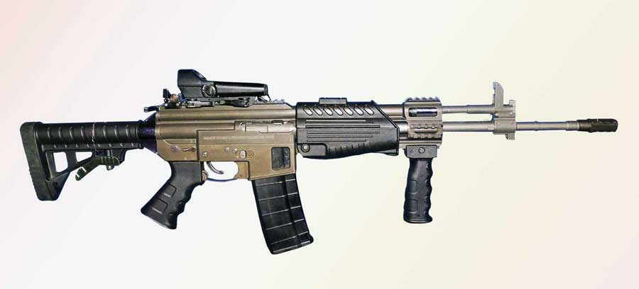
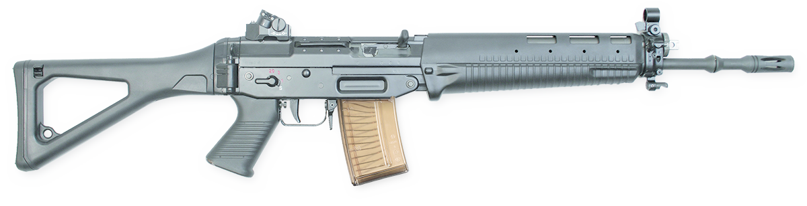
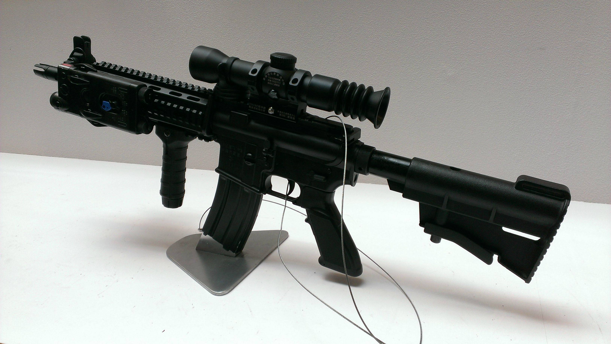

This is a list of some of the modern and historical equipment used by the Indian Army. Most of the army equipment is of foreign design and produced under license in India but efforts are on to progressively design and manufacture equipment locally. The 41 Indian Ordnance Factories under control of Ordnance Factories Board manufacture most of the Army equipment like small arms, ammunition, combat vehicles, artillery, tanks etc.
AK103

AKM

APS

FN-F2000

IMI-Tavor-TAR-21
INSAS

M4-carbine

MCIWS

SG-551

T91-Assault-Rifle
AK103
The AK-103 assault rifle is a derivative of the AK-74M chambered for the 7.62×39mm M43 round, similar to the older AKM. The AK-103 can be fitted with a variety of sights, including night vision and telescopic sights, plus a knife-bayonet or a grenade launcher. It uses plastic components where possible instead of wood or metal, with such components being the pistol grip, hand-guards and stock.
AKM
Introduced into service with the Soviet Army in 1959, the AKM is the most ubiquitous variant of the entire AK series of firearms and it has found widespread use with most member states of the former Warsaw Pact and its African and Asian allies as well as being widely exported and produced in many other countries. The production of these rifles was carried out at both the Tula Arms Plant and Izhmash. It was officially replaced in Soviet frontline service by the AK-74 in the late 1970s, but remains in use worldwide.
APS
The APS underwater assault rifle (APS stands for Avtomat Podvodny Spetsialnyy (Автомат Подводный Специальный) or "Special Underwater Assault Rifle") is an underwater firearm designed by the Soviet Union in the early 1970s. It was adopted in 1975. Made by the Tula Arms Plant (Тульский Оружейный Завод, Tul'skiy Oruzheynyy Zavod) in Russia, it is exported by Rosoboronexport.
The APS has a longer range and more penetrating power than spearguns. This is useful in such situations such as shooting an opposing diver through a reinforced dry suit, a protective helmet (whether air-holding or not), thick tough parts of breathing sets and their harnesses, and the plastic casings and transparent covers of some small underwater vehicles.
FN-F2000
The rifle consists of two main assemblies: the barreled receiver group and the frame, coupled together by means of an axis pin located above the trigger guard. The barrel group has an integral MIL-STD-1913 Picatinny rail used to mount optical sights. The frame or lower receiver contains the trigger group, the bolt and bolt carrier assembly, return mechanism and magazine well. A removable handguard is installed in front of the trigger which completes and encloses the trigger guard.
IMI-Tavor-TAR-21
The Tavor is designed and produced by Israel Weapon Industries (IWI). It is produced in two main variants: the TAR-21 and the CTAR-21.
Built around a long-stroke piston system (as found in the M1 Garand and AK-47), the Tavor is designed to maximize reliability, durability, simplicity of design, and ease of maintenance, particularly under adverse or battlefield conditions.
INSAS
NSAS (an abbreviation of INdian Small Arms System) is a family of infantry arms consisting of an assault rifle and a light machine gun (LMG). It is manufactured by the Ordnance Factories Board at Ordnance Factory Tiruchirappalli, Small Arms Factory Kanpur and Ishapore Arsenal.
The INSAS assault rifle is the standard infantry weapon of the Indian Armed Forces. In April 2015, the Indian government replaced some INSAS rifles of the CRPF with AK-47s. In early 2017, it was announced that INSAS rifles were to be retired and replaced by rifles capable of firing 7.62×51mm NATO cartridges.
In March 2019, media reported that Indian military were set to replace the INSAS with Russia-designed AK-203 assault rifles, manufactured in Indian plants under a joint venture.
M4-carbine
The M4 carbine is a shorter and lighter variant of the M16A2 assault rifle. The M4 is a 5.56×45mm NATO, air-cooled, direct impingement gas-operated, magazine-fed carbine. It has a 14.5 in (370 mm) barrel and a telescoping stock.
The M4 carbine is extensively used by the United States Armed Forces and is largely replacing the M16 rifle in United States Army and United States Marine Corps combat units as the primary infantry weapon and service rifle.
MCIWS
Multi Calibre Individual Weapon System (MCIWS) is an assault rifle developed in India by the Armament Research and Development Establishment, a laboratory of the Defence Research and Development Organisation. It was first seen at the DEFEXPO 2014 exhibition and is likely to be manufactured by the Ordnance Factory Tiruchirappalli.
As of 2015, the rifle is also known as the Advanced Automatic Rifle (AAR) and also as the F-INSAS rifle.
SG-551
The SG 551 is an assault rifle manufactured by Swiss Arms AG (formerly a division of Schweizerische Industrie Gesellschaft, now known as SIG Holding AG) in Switzerland. "SG" is an abbreviation for Sturmgewehr, or "assault rifle". The rifle is based on the earlier 5.56mm SG 540.
T91-Assault-Rifle
T91 was a further development of the T86 assault rifle which had been intended to replace the T65 assault rifle series in Taiwan military service. Experience on the previous design and feedback from various users were incorporated into the T91. Development was completed in 2002, and volume production commenced in 2003.
T91 is a gas-operated short-stroke, air-cooled, rotating bolt, magazine- or drum-fed, select-fire, modularized military rifle compatible with various tactical accessories. Similar to its predecessor, T91 is a shorter version of the T65K2 assault rifle, giving the operator higher mobility and ease of aiming in a confined space.